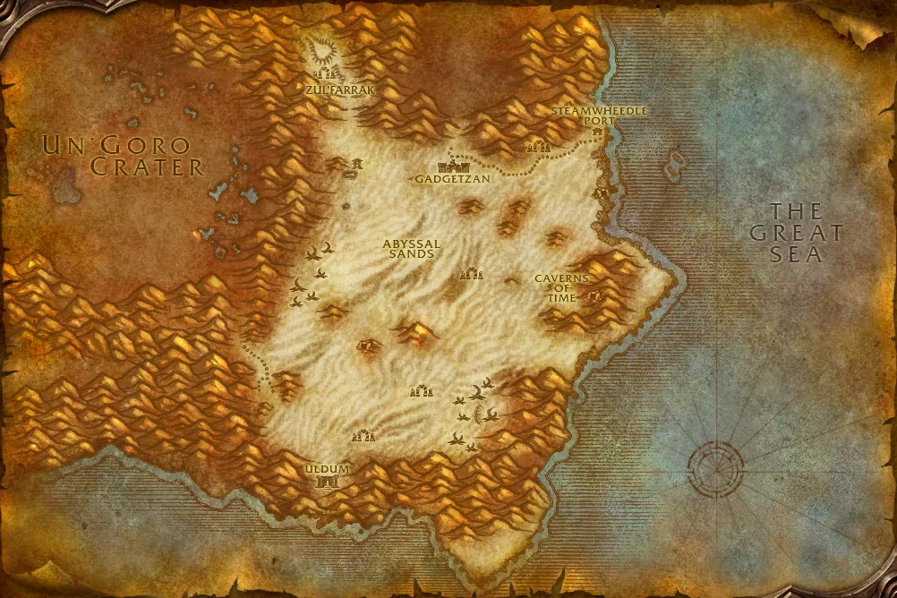

Übersicht
Level44–54
GebietTanaris
KategorieUmkämpft / Neutral
TypClassic
Eingang: Zul'Farrak north-west. Die Gebietskarte findest du im Reiter „Gebietskarte“.
Bosse & Loot
Icons: bekannte Item-IDs nutzen Original-Wowhead-Icons; übrige Einträge bekommen mindestens ein passendes Slot-/Waffenicon statt eines kaputten Bildes.
Antu'sul
0 bekannte Loot-Einträge
Boss bekannt; Loot noch nicht vollständig in der lokalen Forever-Datenbank verifiziert.
Theka the Martyr
0 bekannte Loot-Einträge
Boss bekannt; Loot noch nicht vollständig in der lokalen Forever-Datenbank verifiziert.
Witch Doctor Zum'rah
0 bekannte Loot-Einträge
Boss bekannt; Loot noch nicht vollständig in der lokalen Forever-Datenbank verifiziert.
Hydromancer Velratha
0 bekannte Loot-Einträge
Boss bekannt; Loot noch nicht vollständig in der lokalen Forever-Datenbank verifiziert.
Gahz'rilla
0 bekannte Loot-Einträge
Boss bekannt; Loot noch nicht vollständig in der lokalen Forever-Datenbank verifiziert.
Nekrum Gutchewer
0 bekannte Loot-Einträge
Boss bekannt; Loot noch nicht vollständig in der lokalen Forever-Datenbank verifiziert.
Shadowpriest Sezz'ziz
0 bekannte Loot-Einträge
Boss bekannt; Loot noch nicht vollständig in der lokalen Forever-Datenbank verifiziert.
Chief Ukorz Sandscalp
0 bekannte Loot-Einträge
Boss bekannt; Loot noch nicht vollständig in der lokalen Forever-Datenbank verifiziert.
Dungeonquests
Quelle: Wowhead Forever „Every Dungeon Quest“, aktualisiert 31.10.2026. Beta-Dungeons können noch unvollständig sein.
Allianzquests
Keine fraktionsspezifischen Quests in der lokalen Liste. Siehe Wowhead-Quelle unten.
Hordequests
Keine fraktionsspezifischen Quests in der lokalen Liste. Siehe Wowhead-Quelle unten.
Neutral / Klasse
Keine fraktionsspezifischen Quests in der lokalen Liste. Siehe Wowhead-Quelle unten.
Tanaris – Dungeon-Eingang

Marker: Zul'Farrak north-west
Die Karte zeigt das komplette Gebiet, nicht mehr nur eine schematische Platzhalterfläche.
Die Karte zeigt das komplette Gebiet, nicht mehr nur eine schematische Platzhalterfläche.